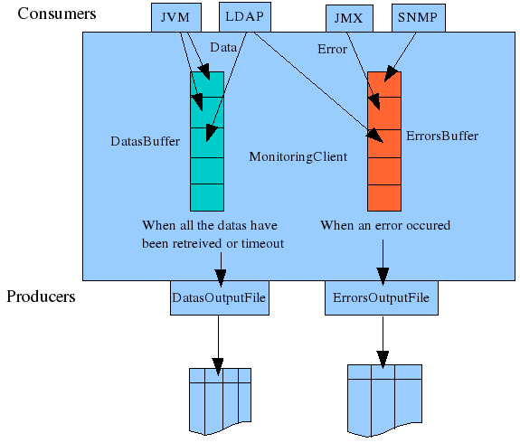

MonitoringClient 0.5.0
How to:
Compile the client and make a jar:
$ cd /qa/opends/workspaces/florian/MonitoringClient-dist/MonitoringClient/
$ javac -sourcepath src -cp lib/jdmkrt.jar:lib/snmp-mib2605.jar src/org/opends/testqa/monitoringclient/*.java -d build/classes/
$ jar cfe MonitoringClient.jar org.opends.testqa.monitoringclient.MonitoringClient -C build/classes/ .
To compile and launch the client, two external libraries have to be included:
jdmkrt.jar
: can be retrieved from the openDMK website (opendmk.dev.java.net)
or from
/usr/pkg/opends/OpenDMK/OpenDMK-bin/lib/jdmkrt.jar
snmp-mib2605.jar : can be found in the OpenDS zip in lib/extensions/snmp-mib2605.jar
Compile the chart generator and make a jar:
$ cd /qa/opends/workspaces/florian/MonitoringClient-dist/ChartGenerator/
javac -sourcepath src -cp lib/jcommon-1.0.13.jar:lib/jfreechart-1.0.10.jar src/org/opends/testqa/monitoringclient/*.java -d build/classes/
jar cfe ChartGenerator.jar org.opends.testqa.monitoringclient.ChartGenerator -C build/classes/ .
To compile and launch the client, two external libraries have to be included:
jcommon-1.0.13.jar : can be retrieved from the JFreeChart website http://www.jfree.org/jfreechart/
jfreechart-1.0.10.jar : can be retrieved from the JFreeChart website http://www.jfree.org/jfreechart/
Theses libraries are on GNU / GPL licence, which isn't compatible with the CDLL.
Launch the monitoring client:
java -cp lib/jdmkrt.jar:lib/snmp-mib2605.jar:MonitoringClient.jar org.opends.testqa.monitoringclient.MonitoringClient -h havmann -p 1389 -w toto123
Launch the chart generator:
java -cp lib/jcommon-1.0.13.jar:lib/jfreechart-1.0.10.jar:ChartGenerator.jar org.opends.testqa.monitoringclient.ChartGenerator
Monitor the server with JMX:
Before monitoring OpenDS with JMX,the JMX Connection Handler have to be enable.
For the procedure, see https://www.opends.org/wiki/page/AccessingOpenDSMonitoringInformationThroughJconsole
Monitor the server with SNMP:
Before monitoring OpenDS with JMX,the SNMP Connection Handler have to be enable.
For the procedure, see
https://www.opends.org/wiki/page/HowToMonitorOpenDSThroughSNMP
Monitor the JVM of the server:
To monitor the JVM of the server, you have to add in the file config/java.properties after the words “start-ds.java-args=-server” the properties “-Dcom.sun.management.jmxremote.port=1650 -Dcom.sun.management.jmxremote.authenticate=false -Dcom.sun.management.jmxremote.ssl=false”.
After, you must launch the tool dsjavaproperties, then reboot the server.
Specifications
Specification of the command line arguments
$
java -jar MonitoringClient.java [-h <hostname>] [-p <LDAPport>]
[-x <JMXport>]
[-m <JVMport>] [-s <SNMPport] [-D
<bindDN>] -w <bindPW> [-f <configFile>]
[-r
<repository>][-i <interval>] [-u <timeUnit>]
|
Short flag |
Long flag |
Type |
Required |
Default value |
Description |
|
-h |
--hostname |
String |
localhost |
Directory server hostname or IP address |
|
|
-p |
--LDAPport |
Int |
no |
389 |
Directory server LDAP port number |
|
-x |
--JMXport |
Int |
no |
Retrieved by a LDAP search |
Directory server JMX port number |
|
-m |
--JVMport |
Int |
no |
|
JMX port number of the host JVM |
|
-s |
--SNMPport |
|
|
8089 |
Directory server SNMP port number |
|
-D |
--bindDN |
String |
no |
cn=Directory Manager |
|
|
-w |
--bindPW |
String |
yes |
|
Password to use to bind to the server |
|
-f |
--configFile |
String |
no |
config.xml |
Config file to use to monitor the server |
|
-i |
--interval |
Int |
no |
3 |
Interval of time between each attributes retrieving |
|
-u |
--timeUnit |
s | min | h |
no |
s |
Time unit of the interval of time |
If there is a space in the value of an argument command line, the value have to be enclose by quotes marks. Ex: $ java -jar MonitoringClient.jar -D "Directory Manager".
Example of command to launch the client:
java -cp lib/jdmkrt.jar:lib/snmp-mib2605.jar:MonitoringClient.jar org.opends.testqa.monitoringclient.MonitoringClient -h havmann -p 1389 -w toto123 -f replication.xml -i 10
Specification of the config file
To specify which attributes have to be monitored, a XML file must be put in the same directory as the file config.dtd. When the client parse the config file, it verify that the syntax of the file is valid for the XML norm, is conform to the DTD and is conform to the client specifications.
It is possible to replace the LDAP port number in the XML file by ${port}. So it's possible to use the same config file also when the LDAP port are not the same.
The config file must have the header :
<?xml version="1.0" encoding="UTF-8" standalone="no"?>
<!DOCTYPE config SYSTEM "./config.dtd">
It has three markups :
config: the root markup of the document
protocol: protocol to use for retrieving the attributes
attribute: attribute to monitor
The config markup haven't any parameter and include at least one protocol markup.
The protocol markup have three parameters and include at least one attribute markup:
The parameters of a attribute markup depends of the protocol used.
Parameters for a attribute markup include in a LDAP protocol markup:
|
Name of the attribute |
Type |
Required |
Default value |
Description |
|
name |
String |
yes |
|
The name of the attribute to monitor |
|
baseDN |
String |
yes |
|
The base dn to retrieve the attribute |
|
filter |
no |
"(objectclass=*)" |
filterRFC-1558 compliant LDAP search filter |
|
|
scope |
“base” | “onelevel” | “sub” |
no |
“sub” |
The scope to retrieve the attribute |
|
output |
“value” | “diff” | “average” |
no |
“value” |
The way of the result of the search will be displayed. |
Parameters for a attribute markup include in a JMX or JVM protocol markup:
|
Name of the attribute |
Type |
Required |
Default value |
Description |
|
name |
String |
|
The name of the attribute to monitor |
|
|
MBeanName |
String |
yes |
|
The name of the MBean to retrieve the attribute |
|
output |
“value” | “diff” | “average” |
no |
“value” |
The way of the result of the search will be displayed. |
Parameters for a attribute markup include in a SNMP protocol markup:
|
Name of the attribute |
Type |
Required |
Default value |
Description |
|
oid |
String |
yes |
|
The oid of the attribute to monitor. It have to be an entry of the table DsApplIfOpsTable |
|
output |
“value” | “diff” | “average” |
no |
“value” |
The way of the result of the search will be displayed. |
Example of config file:
<?xml version="1.0" encoding="UTF-8" standalone="no"?>
<!DOCTYPE config SYSTEM "./config.dtd">
<config>
<protocol name="LDAP">
<attribute name="modifyRequests" baseDN="cn=LDAP Connection Handler 0.0.0.0 port ${port} Statistics,cn=monitor" scope="base" />
<attribute name="searchRequests" baseDN="cn=LDAP Connection Handler 0.0.0.0 port ${port} Statistics,cn=monitor" filter="(objectclass=*)" output="diff"/>
</protocol>
<protocol name="JMX">
<attribute name="modifyRequests" MBeanName="org.opends.server:Name=rootDSE,Rdn1=cn-monitor,Rdn2=cn-LDAP_Connection_Handler_0000_port_${port}_Statistics" output="value"/>
<attribute name="searchRequests" MBeanName="org.opends.server:Name=rootDSE,Rdn1=cn-monitor,Rdn2=cn-LDAP_Connection_Handler_0000_port_${port}_Statistics" output="average"/>
</protocol>
<protocol name="SNMP">
<attribute oid="dsApplIfModifyEntryOps" />
<attribute oid="dsApplIfSearchOps" output="average" />
</protocol>
</config>
Here, we use the protocols LDAP JMX and SNMP to retrieve the number of modify request and the number of search request since the start of the server.
Specifications of the output files
The client save the values of the attributes monitored and the errors into two separate files.
The dates are saved in the same format as the logs of OpenDS: [dd/MMM/yyyy:HH:mm:ss Z]
In the datas file, the first line is a header which specified the title of the columns in the form :
# DATE Protocol1|Attribute1|Output1 Protocol2|Attribute2|Output2 ...
The rest of the file is in the form:
[dd/MMM/yyyy:HH:mm:ss Z] val1 val2 ...
If an attribute haven't been retrieved for any reason, the value of the attribute is set to “-1”.
Example of datas file:
# DATE LDAP|modifyRequests|average LDAP|missing-changes|values
[06/Jun/2008:17:43:09 +0200] 0 0
[06/Jun/2008:17:43:20 +0200] 554 0
[06/Jun/2008:17:43:30 +0200] 574 0
[06/Jun/2008:17:43:40 +0200] 577 5
[06/Jun/2008:17:43:50 +0200] 565 0
[06/Jun/2008:17:44:00 +0200] 394 7
[06/Jun/2008:17:44:10 +0200] 233 0
[06/Jun/2008:17:44:20 +0200] 561 0
[06/Jun/2008:17:44:30 +0200] 550 1
[06/Jun/2008:17:44:40 +0200] 559 0
In this example are monitored the number of modify request during one unit of time (here the second) and the number of missing changes who
In the errors file, the first line is also a header which specified the title of the columns. This header is always the same and is:
# DATE PROTOCOL|ATTRIBUTE MESSAGE
The rest of the file is in the form:
[dd/MMM/yyyy:HH:mm:ss Z] protocol|attribute message
Example of errors file:
# DATE PROTOCOL|ATTRIBUTE MESSAGE
[06/Jun/2008:18:32:20 +0200] LDAP|modifyRequests This attribute couldn't be retrieved
[06/Jun/2008:18:32:20 +0200] LDAP|missing-changes This attribute couldn't be retrieved
[06/Jun/2008:18:57:10 +0200] LDAP|missing-changes This attribute couldn't be retrieved because the timeout has expired
[06/Jun/2008:18:57:22 +0200] LDAP|missing-changes Timeout exceed: 12001 ms
[06/Jun/2008:18:57:20 +0200] LDAP|modifyRequests This attribute couldn't be retrieved
[06/Jun/2008:18:57:20 +0200] LDAP|missing-changes This attribute couldn't be retrieved because the timeout has expired
[06/Jun/2008:19:12:10 +0200] LDAP|modifyRequests This attribute couldn't be retrieved
[06/Jun/2008:19:12:10 +0200] LDAP|missing-changes This attribute couldn't be retrieved
[06/Jun/2008:19:37:00 +0200] LDAP|modifyRequests This attribute couldn't be retrieved because the timeout has expired
[06/Jun/2008:19:37:00 +0200] LDAP|missing-changes This attribute couldn't be retrieved because the timeout has expired
[06/Jun/2008:19:37:10 +0200] LDAP|modifyRequests Timeout exceed: 10128 ms
In this error file, most of the errors are due to the server which is stressed and who isn't responding fast enough. A solution will be to increase the interval of time to give him the time to respond before trigger the timeout.
Graph generation
To generate a graph from the output files, use the command line :
java -jar ChartGenerator.jar
[-a <attribute>] [-i] [-m] [-w <width>] [-h <height]
[-r <repository>]
|
Short flag |
Long flag |
Type |
Required |
Default value |
Description |
|
-a |
--attribute |
String |
Attribute we need to generate the chart |
||
|
-i |
--ignore |
no |
false |
Ignore the errors to generate the chart |
|
|
-m |
--movingAverage |
Boolean |
no |
false |
Generate moving average from the datas file |
|
-w |
--width |
Int |
no |
1000 |
Image width (in pixels) |
|
-h |
--height |
Int |
no |
5000 |
Image height (in pixels) |
|
-r |
--repository |
String |
no |
“charts” |
Repository of the generated charts |
Example of generated chart:
Here, we have monitored the number of request search since the start of the server.
For a short period of time, the server has been too long to respond, and the value “-1” have been saved in the datas output file.
By default, the graphs generator generate one graph by attribute, but it is possible to generate a graph only for the attribute specified with the option -a. The attribute specified must be in the form “Protocol|Attribute”.
Example of command line to generate a graph only for one attribute:
java -jar ChartGenerator.jar -a “LDAP|missing-changes”
If there is too many errors, it is possible too ignore them with the option -i.
Example of generated chart with a lot of errors:

Example of generated chart with errors ignored:

It is also possible to make a time average to make the graph with the option -m:
Example of generated chart with time average:

Interface
For the monitoring client, a producers/consumers model have been used. This way, it is very easy to extend the client and add new producers or new consumers.
Each interval of time, the producers will retrieve from the server the attributes values to monitor and save the values retrieved and the errors witch occurred in two different buffers.
If a producer request is too long and it try to save an obsolete value, then this one is discarded, the value of the data in the buffer is set to -1 and an error is add in the errors buffer.
When all the datas have been retrieved or at the timeout, the datas consumers read the datas buffer, process the datas and exploit it. For example, the DatasOutputFile consumer first retrieve the datas of the datas buffer, the format the datas and finally save them in the data file.
When an error occurred, the errors consumers read it, process it and exploit it. For example, the ErrorsOutputFile consumer first retrieve the errors of the errors buffer, the format the errors and finally save them in the error file.


Tests
Test plan
Name: Test1
Purpose: Normal
use
Description: Run the tool with in normal condition with
default values
Command: $ java -jar
MonitoringClient.java
Result: PASS if the data file is in
the form:
# DATE LDAP|modifyRequests LDAP|searchRequests JMX|modifyRequests JMX|searchRequests
[date1] val1 0 val1 0
[date2] val2 val3 val2 val4
[date3] val5 val6 val5 val7
Name: Test2
Purpose: Unknown
host
Description: Run the tool with an unknown host as
parameter
Command: $ java -jar MonitoringClient.java -h
toto
Result: PASS if the data and errors file is in the
form:
# DATE LDAP|modifyRequests LDAP|searchRequests JMX|modifyRequests JMX|searchRequests
[date2] -1 -1 -1 -1
[date3] -1 -1 -1 -1
# DATE PROTOCOL|ATTRIBUTE MESSAGE
[date1] LDAP|General Unknown host
[date1] JMX|General Unknown host
[date2] LDAP|General Unknown host
[date2] JMX|General Unknown host
[date3] LDAP|General Unknown host
[date3] JMX|General Unknown host
Name: Test3
Purpose: Wrong LDAP port
number
Description: Run the tool with a wrong LDAP port
number as parameter
Command: $ java -jar MonitoringClient.java -h -p
1388 -x 1689
Result: PASS if the data and errors file is in
the form:
# DATE LDAP|modifyRequests LDAP|searchRequests JMX|modifyRequests JMX|searchRequests
[date1] -1 -1 val1 0
[date2] -1 -1 val2 val3
[date3] -1 -1 val4 val5
# DATE PROTOCOL|ATTRIBUTE MESSAGE
[date1] LDAP|General Wrong port number
[date2] LDAP|General Wrong port number
[date3] LDAP|General Wrong port number
Name: Test4
Purpose: Wrong JMX port
number
Description: Run the tool with a wrong JMX port
number as parameter
Command: $ java -jar MonitoringClient.java -h -p
1388 -x 1689
Result: PASS if the data and errors file is in
the form:
# DATE LDAP|modifyRequests LDAP|searchRequests JMX|modifyRequests JMX|searchRequests
[date1] val1 0 -1 -1
[date2] val2 val3 -1 -1
[date3] val4 val5 -1 -1
# DATE PROTOCOL|ATTRIBUTE MESSAGE
[date1] JMX|General Wrong port number
[date2] JMX|General Wrong port number
[date3] JMX|General Wrong port number
Name: Test5
Purpose: Invalid
credentials
Description: Run the tool with invalid
credentials parameters
Command: $ java -jar MonitoringClient.java -h -D
"Directory Manager 2" -w "totototo"
Result:
PASS if the data and errors file is in the form:
# DATE LDAP|modifyRequests LDAP|searchRequests JMX|modifyRequests JMX|searchRequests
[date1] -1 -1 -1 -1
[date2] -1 -1 -1 -1
[date3] -1 -1 -1 -1
# DATE PROTOCOL|ATTRIBUTE MESSAGE
[date1] LDAP|General Invalid credentials
[date1] JMX|General Invalid credentials
[date2] LDAP|General Invalid credentials
[date2] JMX|General Invalid credentials
[date3] LDAP|General Invalid credentials
[date3] JMX|General Invalid credentials
Name: Test6
Purpose: Multiples LDAP
attributes
Description: Run the tool to retrieve a lot of
attribute using the LDAP protocol
Command: $ java -jar MonitoringClient.java -h -f
multiplesLDAPAttributes.xml
Result: PASS if the data and
errors file is in the form:
# DATE LDAP|searchRequests LDAP|requestsSubmitted LDAP|missing-changes
[date1] val1 val2 val3
[date2] val4 val5 val6
[date3] val7 val8 val9
# DATE PROTOCOL|ATTRIBUTE MESSAGE
Name: Test7
Purpose: Multiples JMX
attributes
Description: Run the tool to retrieve a lot of
attribute using the JMX protocol
Command: $ java -jar MonitoringClient.java -h -f
multiplesJMXAttributes.xml
Result: PASS if the data and
errors file is in the form:
# DATE JMX|searchRequests JMX|requestsSubmitted
[date1] val1 val2
[date2] val3 val4
[date3] val5 val6
# DATE PROTOCOL|ATTRIBUTE MESSAGE
Name: Test8
Purpose:
searchRequests
Description: Run the tool to retrieve the
searchRequests attribute with LDAP and JMX
Command: $ java -jar MonitoringClient.java -h -f
searchRequests.xml
Result: PASS if the data and errors file
is in the form:
# DATE LDAP|searchRequests JMX|searchRequests
[date1] val1 val1
[date2] val2 val2
[date3] val3 val3
# DATE PROTOCOL|ATTRIBUTE MESSAGE
Name: Test9
Purpose:
replication
Description: Run the tool to monitor the
missing-changes of a replicated server with a time interval of 10 sec
to avoid most of the errors due to the timeout
Command: $ java -jar MonitoringClient.java -h -f
replication -i 10
Result: PASS if the data and errors file
is in the form:
# DATE LDAP|modifyRequests LDAP|missing-changes
[date1] val1 val1
[date2] val2 val2
[date3] val3 val3
# DATE PROTOCOL|ATTRIBUTE MESSAGE
Test results
Test1: PASS
Test2: PASS
Test3: FAILED
# DATE LDAP|modifyRequests LDAP|searchRequests JMX|modifyRequests JMX|searchRequests
[09/Jun/2008:15:55:35 +0200] -1 -1 -1 -1
[09/Jun/2008:15:55:38 +0200] -1 -1 -1 -1
[09/Jun/2008:15:55:41 +0200] -1 -1 -1 -1
# DATE PROTOCOL|ATTRIBUTE MESSAGE
[09/Jun/2008:15:55:35 +0200] LDAP|General Wrong port number
[09/Jun/2008:15:55:35 +0200] JMX|General Unknown host
[09/Jun/2008:15:55:38 +0200] LDAP|General Wrong port number
[09/Jun/2008:15:55:38 +0200] JMX|General Unknown host
[09/Jun/2008:15:55:41 +0200] LDAP|General Wrong port number
[09/Jun/2008:15:55:41 +0200] JMX|General Unknown host
Test4: PASS
Test5: PASS
Test6: PASS
Test7: PASS
Test8: PASS
Test9: PASS
Success rate: 89%
Known bugs
When we run the tool with a wrong LDAP port number and a correct JMX port number as parameters, the JMX connection is refused.
When we monitor the server with the LDAP and the JMX protocol, the JMXMonitor thread, before opening an authenticated connexion to retrieve the attributes, open an anonymous bind and unbind just after without doing anything, which modify the value of the monitoring attributes of the server.
Sometimes when a general error occurred (like an Unknown host error), a line in the data file doesn't been written when it should be, but with the next line, so that two lines are written at the same time.